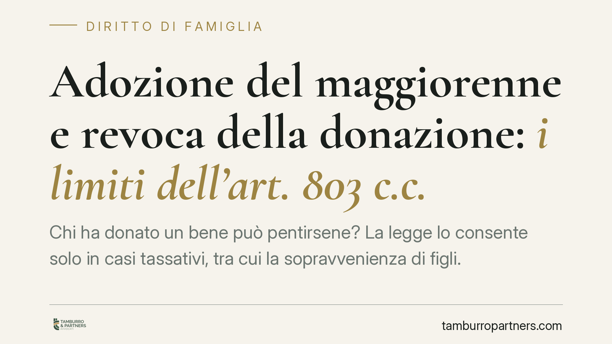

Adozione del maggiorenne e revoca della donazione: i limiti dell'art. 803 c.c.
Chi ha donato un bene può pentirsene? La legge lo consente solo in casi tassativi, tra cui la sopravvenienza di figli. Ma l'adozione di un maggiorenne rientra in questa ipotesi? Un orientamento della giurisprudenza di legittimità tende a escluderlo, negando che l'istituto possa essere piegato a finalità patrimoniali. Analizziamo il quadro normativo e le conseguenze pratiche per donanti e donatari.

Il caso e la questione
La donazione è, per sua natura, un atto stabile. La legge ammette che il donante torni sui propri passi solo in ipotesi tassative. Tra queste, l'art. 803 c.c. prevede la revocazione per sopravvenienza o esistenza di figli: se dopo la donazione nasce (o si scopre esistente) un figlio del donante, questi può chiedere di riavere il bene donato.
La domanda che si è posta la giurisprudenza è netta: l'adozione di una persona maggiorenne può essere equiparata alla nascita di un figlio ai fini di questa norma? Secondo un orientamento della Corte di Cassazione, la risposta è negativa. L'obiettivo è escludere ricostruzioni strumentali della situazione familiare, ossia adozioni compiute al solo scopo di recuperare beni in precedenza donati a terzi.
Inquadramento normativo
Occorre distinguere due istituti diversi.
L'adozione dei minori (L. 184/1983) recide i legami con la famiglia di origine e inserisce a pieno titolo il minore nella nuova famiglia, con effetti equiparabili alla filiazione.
L'adozione del maggiorenne (artt. 291 e seguenti c.c.) ha funzione ben diversa: risponde a esigenze prevalentemente successorie e di trasmissione del nome. L'adottato conserva i rapporti con la propria famiglia di origine e non instaura alcun rapporto di parentela con i parenti dell'adottante (art. 300 c.c.). Non si crea, in altre parole, la stessa relazione che nasce dalla filiazione.
È su questa differenza che poggia il ragionamento: la ratio dell'art. 803 c.c. è tutelare il donante di fronte a un evento indisponibile alla sua volontà — la nascita di un figlio non pianificata al momento della donazione. L'adozione del maggiorenne, invece, è frutto di una scelta libera e consapevole del donante stesso. Manca dunque il presupposto della sopravvenienza non voluta.
Va ricordato, inoltre, il termine di decadenza. L'art. 804 c.c. stabilisce che l'azione di revocazione per sopravvenienza di figli deve essere proposta entro un anno dal giorno in cui il donante ha avuto notizia dell'esistenza del figlio. Si tratta di un termine breve e perentorio, da non trascurare.
Implicazioni pratiche
Per il donante. Chi conta di recuperare un bene donato attraverso l'adozione di un maggiorenne rischia di trovarsi senza tutela. L'operazione, se letta come artificio, non produce l'effetto sperato e può esporre a contestazioni. Chi invece teme un futuro ripensamento dovrebbe valutare, a monte, strumenti diversi dalla donazione pura e semplice.
Per il donatario. La posizione di chi ha ricevuto il bene ne esce rafforzata. Un'adozione successiva del donante non basta, di per sé, a rimettere in discussione l'attribuzione ricevuta. Resta però esposto alle altre cause di revocazione previste dalla legge (ad esempio l'ingratitudine) e ai diritti dei legittimari in sede di successione.
Cosa fare in concreto
- Verifica i termini. Se ritieni di avere titolo alla revocazione per sopravvenienza di figli, ricorda il termine annuale dell'art. 804 c.c.: agisci senza attese.
- Valuta lo strumento giusto prima di donare. Se vuoi conservare margini di ripensamento o vincolare la destinazione del bene, considera alternative come il patto di famiglia, il trust o una disposizione testamentaria, che offrono flessibilità diverse dalla donazione diretta.
- Non usare l'adozione a fini patrimoniali. L'adozione del maggiorenne non è uno strumento di recupero dei beni donati e può rivelarsi inefficace allo scopo.
- Considera i legittimari. Ogni pianificazione va coordinata con i diritti riservati a coniuge, figli e ascendenti, che restano intangibili in sede di successione.
- Fai valutare l'operazione. Prima di firmare un atto di donazione o avviare un'adozione, sottoponi la situazione a un'analisi mirata: le conseguenze sono spesso irreversibili.
---
Contributo informativo a cura di Tamburro & Partners Avvocati. Non costituisce parere legale.
Ogni famiglia ha il suo equilibrio.
Separazione, divorzio, affidamento, assegno: se vuoi un confronto riservato su una specifica situazione, scrivi allo studio. Ti rispondiamo entro un giorno lavorativo.